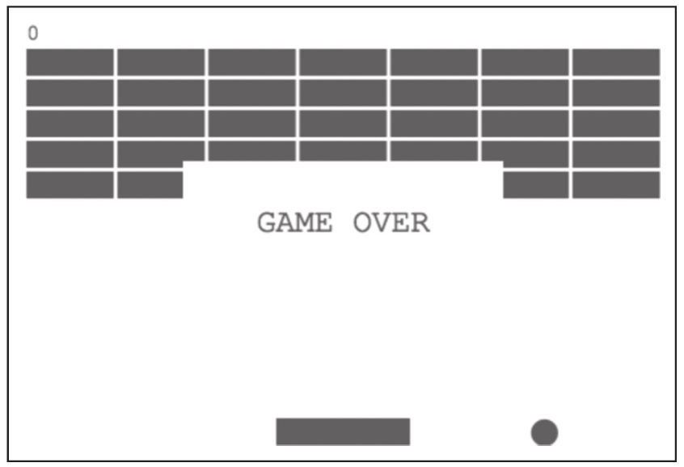
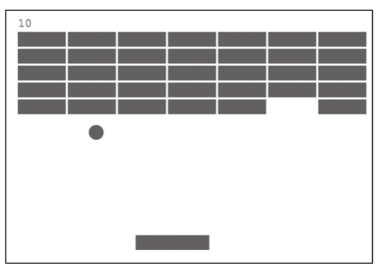

我们已经对程序的结构进行了规划和设计，最后，想法还是要落实到代码中，让我们开始编写代码吧。
提示
breakout的完整实现，在本书配套的GitHub代码库的chapter-15/breakout目录下可以找到，不过，读者最好还是根据本书中的介绍来阅读代码，这样才能容易理解。
1.网页结构
既然我们的breakout是一个网页应用，需要一个HTML的载体，代码如下：
<!doctype html>
<html>
<head>
</head>
<body>
<canvas id="stage" width="480" height="320"></canvas>
<script src="https://cdnjs.cloudflare.com/ajax/libs/rxjs/5.5.2/Rx.min.js"> </script>
<script src="./breakout.js"></script>
</body>
</html>
这个HTML文件并不复杂，除了导入RxJS和包含游戏逻辑的breakout.js文件，就是使用了一个canvas标签，这个canvas的id是stage，意思就是“舞台”，将要实现的breakout游戏就完全在这个舞台上表演。
2.渲染游戏元素的函数
接下来，我们就开始编写游戏的主要部分breakout.js文件。
我们需要渲染游戏元素，虽然理论上可以把渲染代码写在一个函数中，但是这个函数估计会很长，不利于管理，所以，我们为每个元素都建立独立的渲染函数。
首先，要把“舞台”搭建好，代码如下：
const stage = document.getElementById('stage');
const context = stage.getContext('2d');
context.fillStyle = 'green';
代码获取了id为stage的canvas元素，通过getContext函数创造了绘制元素的环境context，默认的渲染颜色使用绿色。之后，游戏中就可以通过context的来渲染游戏元素，并通过stage来获取“舞台”的大小。
游戏元素中需要一些常数，为了避免使用让人难以理解的魔术数（magic number），把元素的尺寸等数据全部定义为const变量，代码如下：
const PADDLE_WIDTH = 100; const PADDLE_HEIGHT = 20; const BALL_RADIUS = 10; const BRICK_ROWS = 5; const BRICK_COLUMNS = 7; const BRICK_HEIGHT = 20; const BRICK_GAP = 3;
游戏需要一个启动界面，用于给玩家简单介绍一下使用方法，这部分逻辑实现在drawIntro函数中，代码如下：
function drawIntro() {
context.clearRect(0, 0, stage.width, stage.height);
context.textAlign = 'center';
context.font = '24px Courier New';
context.fillText('Press [<] and [>]', stage.width / 2, stage.height / 2);
}
其中的drawIntro中，首先用clearReact方法清除“舞台”上所有现存的绘制结果，然后在中央显示“Press[<]and[>]”，读者可以考虑添加更加有表现力的方式启动界面文字。
当游戏结束的时候，也需要在界面上给用户提示，这部分逻辑在drawGameOver函数中实现，代码如下：
function drawGameOver(text) {
context.clearRect(stage.width / 4, stage.height / 3, stage.width / 2, stage.height / 3);
context.textAlign = 'center';
context.font = '24px Courier New';
context.fillText(text, stage.width / 2, stage.height / 2);
}
这个drawGameOver函数有一个参数，可以指定显示的文字，因为游戏结束会有不同的原因，可能是玩家没接住球导致失败，也可能是玩家摧毁了所有的砖块获得成功，不同的结果，传入的参数text应该会有不同。
可以注意到，drawGameOver和drawIntro调用clearReact的参数有不同，对于drawIntro，因为是一个全新开始，所以擦掉全部界面重画，对于drawGameOver，擦掉全部界面并不好，不然玩家连自己怎么输的都没看清，体验不会太好，所以只清除中间一小部分界面。
如同图15-2所示，在显示Game Over的时候，至少让玩家看到球从哪里漏过去了。

图15-2 Game Over的界面
在游戏界面中需要实时显示玩家获得的分数，每摧毁一个砖块得10分，显示在左上角，为显示分数实现了一个drawScore函数，代码如下：
function drawScore(score) {
context.textAlign = 'left';
context.font = '16px Courier New';
context.fillText(score, BRICK_GAP, 16);
}
在实现这些绘制元素的函数时，除了context、stage以及常数是直接使用之外，其余关于元素的状态都以参数形式传入，这样编码的目的是让这些函数可以和被调用环境无关。
需要绘制底部球拍的函数drawPaddle，代码如下：
function drawPaddle(position) {
context.beginPath();
context.rect(
position - PADDLE_WIDTH / 2,
context.canvas.height - PADDLE_HEIGHT,
PADDLE_WIDTH,
PADDLE_HEIGHT
);
context.fill();
context.closePath();
}
上面使用了context.rect来绘制长方形的球拍（Paddle），接下来会使用context.arc来绘制圆形的弹球，绘制弹球的函数drawBall代码如下：
function drawBall(ball) {
context.beginPath();
context.arc(ball.position.x, ball.position.y, BALL_RADIUS, 0, Math.PI * 2);
context.fill();
context.closePath();
}
最后一个需要绘制的游戏元素就是砖块，我们定义了两个函数drawBricks和drawBrick，前者调用后者完成所有砖块的绘制，代码如下：
function drawBrick(brick) {
context.beginPath();
context.rect(
brick.x - brick.width / 2,
brick.y - brick.height / 2,
brick.width,
brick.height
);
context.fill();
context.closePath();
}
function drawBricks(bricks) {
bricks.forEach(brick => drawBrick(brick));
}
至此，所有渲染游戏界面元素的函数都定义完毕，接下来要考虑的是何时调用这些函数。
3.时钟Observable对象
在设计阶段，我们设想过要用interval构建一个控制游戏节奏的Observable对象，我们把这个对象命名为ticker$，对应的代码如下：
const TICKER_INTERVAL = Math.ceil(1000 / 60);
const ticker$ = Rx.Observable
.interval(TICKER_INTERVAL, Rx.Scheduler.requestAnimationFrame)
.map(() => ({
time: Date.now(),
deltaTime: null
}))
.scan(
(previous, current) => ({
time: current.time,
deltaTime: (current.time - previous.time) / 1000
})
);
interval的第一个参数是1000/60，这是因为给用户最顺滑的动画效果，至少要有每秒60帧的界面更新率，也就是常说的60fps（frame per second），1000毫秒除以60的结果是16毫秒，作为interval参数，差不多就是能够达到60fps的效果。
不过，interval默认的Scheduler是async，在第11章中我们知道，async并不是最佳的协调动画渲染的Scheduler，所以，在这里让interval使用requestAnimationFrame这个Scheduler。
无论使用哪一种Scheduler，因为JavaScript运行环境的原因，最后都不能百分之百保证每个数据之间的间隔是16毫秒，但是，为了得到游戏元素（弹球和球拍）的准确位移，就需要准确知道这两帧之间的时间差，既然时间差不确定是16毫秒，只能通过代码来计算。
使用map和scan，让ticker$产生的每个数据包含两个字段，其中time字段的值是绝对的时间，deltaTime是这一个数据和上一个数据的时间差，弹珠和球拍会根据deltaTime来计算位移。
4.玩家的键盘输入
接下来要产生玩家按键事件的Observable对象，我们将这个对象命名为key$，代码如下：
const PADDLE_CONTROLS = {
'ArrowLeft': -1,
'ArrowRight': 1
};
const key$ = Rx.Observable
.merge(
Rx.Observable.fromEvent(document, 'keydown').map(event => (PADDLE_CONTROLS[event.key] || 0)),
Rx.Observable.fromEvent(document, 'keyup').map(event => 0)
)
.distinctUntilChanged();
在breakout游戏中，玩家只要在网页中按键就可以操纵球拍，所以fromEvent的第一个参数就是document。我们关心的只有左右方向键两个按键事件，PADDLE_CONTROLS中的两个字段ArrowLeft和ArrowRight分别对应左右方向键事件中的key值。
在这里，通过merge两个数据流来实现控制，两个数据流分别是keydown和keyup。对于keydown数据流，如果按下左方向键就会产生-1，如果按下右方向键则产生1，如果用户松开按键或者按下其他键，产生的数据就是0。
对于merge之后的数据流使用distinctUntilChanged，是为了保证ticker$不会产生连续同样的数据。理想情况下，keydown事件和keyup事件是交错出现的，但是在实际情况下，情况完全难以预料，所以使用distinctUntilChanged是最保险的办法。
5.产生球拍位置的数据流
球拍相关状态只有一个，就是在底部的横向位置，我们创造一个叫createPaddle$的函数来产生球拍位置的数据流，代码如下：
const PADDLE_SPEED = 240;
const createPaddle$ = ticker$ => ticker$
.withLatestFrom(key$)
.scan((position, [ticker, direction]) => {
const nextPosition = position + direction * ticker.deltaTime * PADDLE_SPEED;
return Math.max(
Math.min(nextPosition, stage.width - PADDLE_WIDTH / 2),
PADDLE_WIDTH / 2
);
}, stage.width / 2)
.distinctUntilChanged();
这里并不直接定义一个Observable对象，而是创建一个返回Observable对象的函数，是考虑到游戏可以重复开始。每次游戏重新开始，最好是产生一个新的球拍对象，这样新游戏不受之前的状态影响。对于key$和ticker$则不必如此，因为无论游戏重复多少次，这两个Observable对象都是可以重用的。
createPaddle$利用withLatestFrom来合并ticker$和key$，在这里我们还有一个选择，可以使用combineLatest，但是在第5章我们介绍过，combineLatest对于有多重依赖关系的数据流结果会产生glitch问题，withLatestFrom更适合由一个主要数据流决定下游数据产生节奏的场景。对于breakout游戏，ticker$就是驱动游戏进度的主要数据源，key$只是贡献数据，当key$中产生数据的时候没有必要立刻引发一次界面渲染，只需要配合ticker$提供最新的按键信息就好了，所以，使用withLatestFrom也十分合适，我们不使用combineLatest。
在createPaddle$中同样使用了scan，根据ticker$提供数据的deltaTime能够得到这一帧和上一帧的时间差，这个时间差乘以PADDLE_SPEED，就是球拍应该移动的距离。
6.判断碰撞
在游戏过程中，需要不断地判断弹球和球拍是否接触、判断球体和砖块是否碰撞，为此我们添加isHit和isCollision函数，代码如下：
function isHit(paddle, ball) {
return ball.position.x > paddle - PADDLE_WIDTH / 2
&& ball.position.x < paddle + PADDLE_WIDTH / 2
&& ball.position.y > stage.height - PADDLE_HEIGHT - BALL_RADIUS / 2;
}
function isCollision(brick, ball) {
return ball.position.x + ball.direction.x > brick.x - brick.width / 2
&& ball.position.x + ball.direction.x < brick.x + brick.width / 2
&& ball.position.y + ball.direction.y > brick.y - brick.height / 2
&& ball.position.y + ball.direction.y < brick.y + brick.height / 2;
}
这两个函数都是纯函数，在代码中应该尽量使用纯函数。
7.初始化游戏状态
游戏的界面应该只是数据的一种呈现（这和之前介绍的React思想一致），为此一定要确定好应用的数据如何管理，我们定义一个initState函数来初始化游戏的状态，代码如下：
const initState = () => ({
ball: {
position: {
x: stage.width / 2,
y: stage.height / 2
},
direction: {
x: 2,
y: 2
}
},
bricks: createBricks(),
score: 0
});
可以看到，游戏状态包含弹球的位置（ball.position）和运动方向（ball.direction）、所有砖块的状态（bricks）以及玩家当前得分（score）。
创建一个函数initState来产生初始状态，同样是因为玩家可以重复玩游戏，每一次重新开一局都应该重新调用initState产生全新的状态。
initState调用createBricks获得砖块的初始状态，createBricks的代码如下：
function createBricks() {
let width = (stage.width - BRICK_GAP - BRICK_GAP * BRICK_COLUMNS) / BRICK_COLUMNS;
let bricks = [];
for (let i = 0; i < BRICK_ROWS; i++) {
for (let j = 0; j < BRICK_COLUMNS; j++) {
bricks.push({
x: j * (width + BRICK_GAP) + width / 2 + BRICK_GAP,
y: i * (BRICK_HEIGHT + BRICK_GAP) + BRICK_HEIGHT / 2 + BRICK_GAP + 20,
width: width,
height: BRICK_HEIGHT
});
}
}
return bricks;
}
8.创造游戏状态数据流
上面介绍的只是游戏的初始状态，在游戏过程中，这个状态会被ticker$驱动从而不停改变，说到底，游戏状态也应该是Observable对象中的数据。
同样出于游戏可以重复开始的目的，我们创造了一个createState$函数来创造breakout游戏的状态数据流，代码如下，这个函数代码比较多，我们逐段讲解：
const BALL_SPEED = 60;
const createState$ = (ticker$, paddle$) =>
ticker$
.withLatestFrom(paddle$)
.scan(({ball, bricks, score}, [ticker, paddle]) => {
let remainingBricks = [];
const collisions = {
paddle: false,
floor: false,
wall: false,
ceiling: false,
brick: false
};
和createPaddle$一样，使用了withLatestFrom来组合ticker$和paddle$，其中paddle$应该是createPaddle$产生的Observable对象。因为paddle$依赖于ticker$，createState$返回的结果也依赖于ticker$，这就是一个多重依赖的关系，如果使用combineLatest就会出现glitch现象，这也就是我们使用withLatestFrom的原因。
在上面的代码中，scan的规约函数并没有结束，接下来还要更新弹球的位置，同样使用了ticker$提供数据的deltaTime来计算移动距离，代码如下：
ball.position.x = ball.position.x + ball.direction.x * ticker.deltaTime * BALL_SPEED; ball.position.y = ball.position.y + ball.direction.y * ticker.deltaTime * BALL_SPEED;
对于每一个砖块，判断是否被弹球击中，如下所示：
bricks.forEach((brick) => {
if (!isCollision(brick, ball)) {
remainingBricks.push(brick);
} else {
collisions.brick = true;
score = score + 10;
}
});
判断球拍和弹球是否接触，代码如下：
collisions.paddle = isHit(paddle, ball);
判断弹球是否和墙体发生了碰撞，代码如下：
if (ball.position.x < BALL_RADIUS || ball.position.x > stage.width - BALL_RADIUS) {
ball.direction.x = -ball.direction.x;
collisions.wall = true;
}
collisions.ceiling = ball.position.y < BALL_RADIUS;
当弹珠和任何一个物体碰撞，y轴的移动方向都会和以前相反：
if (collisions.brick || collisions.paddle || collisions.ceiling ) {
ball.direction.y = -ball.direction.y;
}
最后，返回最新的游戏状态结果：
return {
ball: ball,
bricks: remainingBricks,
collisions: collisions,
score: score
};
scan函数的seed参数通过调用initState获得，每一次createState$调用都会产生一个全新的游戏初始状态：
}, initState());
9.控制游戏进程
上面全都是准备工作，最后需要把所有的Observable对象和函数组合在一起，让数据去驱动游戏界面的渲染。
假设我们渲染游戏界面的函数名叫updateView，那么开始游戏只需要如下这样的代码：
drawIntro(); const paddle$ = createPaddle$(ticker$); const state$ = createState$(ticker$, paddle$); const game$ = ticker$.withLatestFrom(paddle$, state$); game$.subscribe(updateView);
上面的代码当然足够工作，但是，当一局游戏结束之后，不能自动重新开始下一局，因为集合了ticker$、paddle$和state$的数据流game$在游戏结束的时候就不能继续了。
最好的方式是在游戏结束的时候重新订阅game$，当然，必须要保证game$被订阅的时候会产生全新的数据流。
接下来就有一个问题需要解决：如何控制游戏重新订阅game$呢？在这里，我们利用了retryWhen，这个操作符可以对上游进行重试，在第9章中我们介绍过retyrWhen，retryWhen接受一个函数，这个函数返回的Observable对象决定什么时机重新订阅上游。
利用retryWhen，我们只要让game$在游戏结束的时候产生异常，那样retryWhen就会重新订阅game$，改进之后的game$实现代码如下：
let restart;
const game$ = Rx.Observable.create((observer) => {
drawIntro();
restart = new Rx.Subject();
const paddle$ = createPaddle$(ticker$);
const state$ = createState$(ticker$, paddle$);
ticker$.withLatestFrom(paddle$, state$)
.merge(restart)
.subscribe(observer);
});
game$.retryWhen(err$ => {
return err$.delay(1000);
}).subscribe(updateView);
在这段代码中，通过create这个操作符来创造game$，这样可以用一个函数定制这个game$被订阅时的行为。
每当game$被订阅时，就会调用drawIntro显示介绍的界面，这标志着新的一局游戏开始。
在模块级别声明了一个restart变量，这个变量将在updateView中被使用到，每当game$被订阅，restart就会被赋值一个新的Subject对象，这个restart用来控制游戏重新开一局，所以，使用merge把restart合并，这样，当restart产生异常时，会引发game$产生异常。
当game$产生异常时，retryWhen就会发生作用，利用delay的作用，会在1秒钟之后重新订阅上游game$，这就有1秒钟的时间让玩家看到游戏结束的界面。
在这里使用了一个技巧，利用异常处理之后的重试来控制逻辑流程，通常，在编程中不应该使用异常来控制流程，比如，在JavaScript中像下面这样写绝对是不合适的：
try {
const bar = x.foo;
// 处理x正常情况
} catch (ex) {
// 处理x为undefined或者null的情况
}
上面的逻辑完全可以通过条件判断x是否存在而完成，利用访问x的属性会抛出异常来代替条件判断的处理，虽然事实上执行也能通过，但是不可取，因为这让代码更难读懂，异常处理的执行效率也比条件判断要低，频繁调用会有性能问题。
但在breakout游戏中我们利用异常来处理逻辑流程，首先因为这种写法并不会让代码更难懂，retryWhen是RxJS提供的操作符，已经实现了重新订阅上游Observable的功能，我们可以自己重新实现类似的逻辑，但是显得非常浪费。其次，在breakout游戏中，在游戏结束时候的一次异常，并不会造成性能上的影响。
10.渲染游戏界面
最后，我们来看渲染游戏界面的函数updateView，代码如下：
function updateView([ticker, paddle, state]) {
context.clearRect(0, 0, stage.width, stage.height);
drawPaddle(paddle);
drawBall(state.ball);
drawBricks(state.bricks);
drawScore(state.score);
if (state.ball.position.y > stage.height - BALL_RADIUS) {
drawGameOver('GAME OVER');
restart.error('game over');
}
if (state.bricks.length === 0) {
drawGameOver('Congradulations!');
restart.error('cong');
}
}
updateView所做的事情很直接，先清空整个游戏界面，然后依次渲染球拍、弹珠、砖块和玩家得分。不过，这里updateView还要多做一件事，就是判断游戏是否结束，如果弹珠越过了界面底部，那游戏就失败，即显示Game Over；如果所有的砖块都被摧毁，那就是游戏成功，显示恭喜给玩家看。
不管是哪一种原因导致游戏结束，updateView都调用restart的error方法，这会导致game$也产生异常，这个异常会被retryWhen捕捉，然后重新订阅game$，这就达到了重新开始游戏的效果。
大功告成，我们的breakout游戏终于完成了，界面如图15-3所示。
我们用RxJS代码实现breakout游戏总共有244行代码（包括空行），不敢说这个breakout游戏比当年沃兹尼亚克和乔布斯用电子芯片制作的breakout更加精妙，但是从实现这个游戏的过程中，读者应该感受到用RxJS能够用少量代码实现比较复杂的功能。

图15-3 breakout的游戏界面
读者可以根据本书的内容或者配套GitHub代码库中的代码完成自己的breakout，享受自己的成果吧！